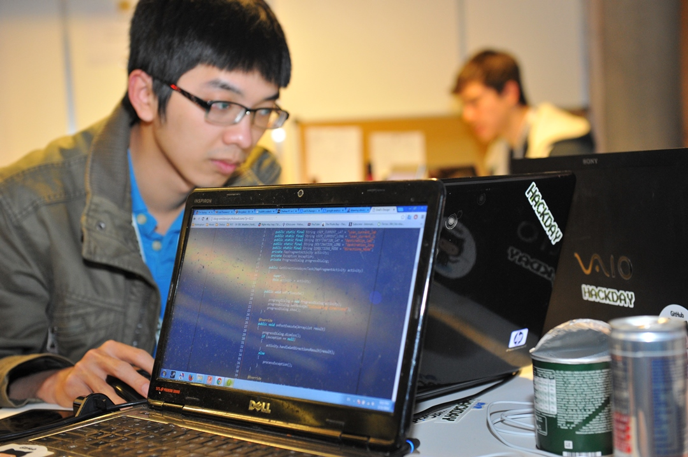
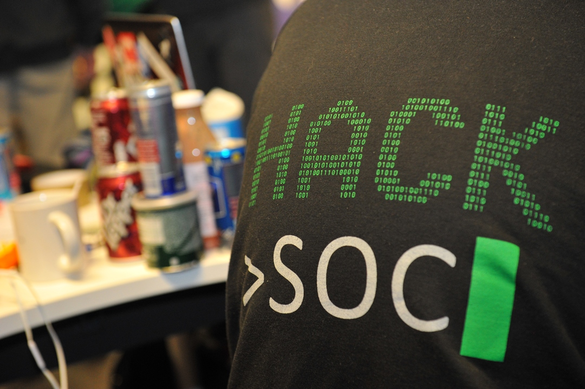
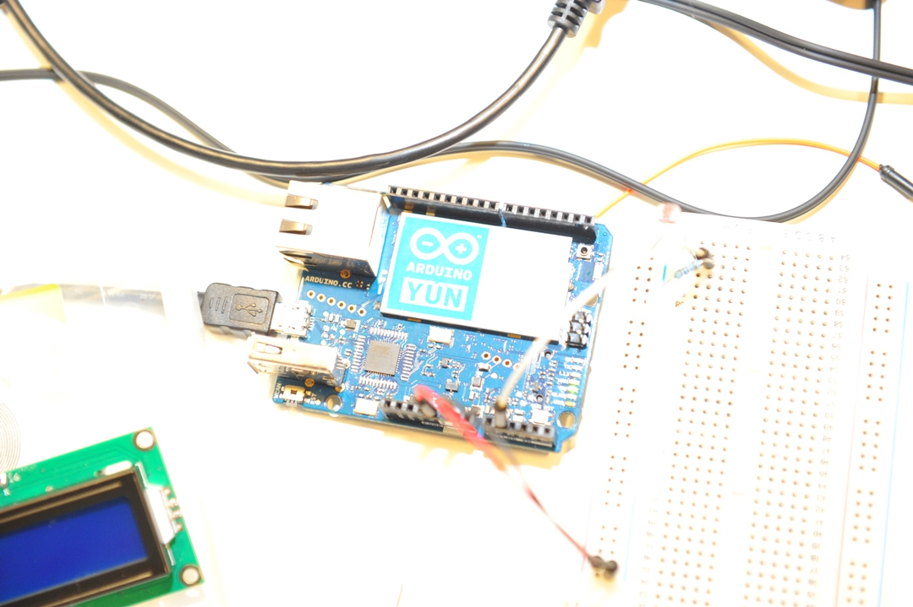

Build Cool Stuff With Us
Mini Hack is a 12 hour long collaborative programming event happening on the 16th of November in the School of Computer Science. A hundred students will come together, form teams, share ideas, and help each other build innovative applications. It's a fantastic opportunity to have fun making cool things and meeting new people. There'll be free healthy food, fun challenges, a lot of learning, and stacks of stickers.
Register
FAQ
What is a hackathon?
A hackathon is a collaborative programming festival. Usually they happen over a whole weekend. Mini Hack is a good chance to see what one is like. Hundreds of passionate students come together, form teams, share ideas, and help each other build cool technology. It's a fantastic opportunity to meet new people, learn from mentors, and make cool stuff. They're very beginner friendly. Everybody is there to help each other and have fun.
What is HackSoc?
HackSoc is the programming and technology society. We provide passionate students a chance to learn about tech, share ideas, and build cool software and hardware. We teach beginners how to program and make mobile apps with weekly lessons. We also have weekly talks on more advanced topics. We are welcoming to students of all ability levels.
Where is Mini Hack?
It is being held at The Hub, School of Computer Science, Jubilee Campus.
What time should I arrive?
Please aim to arrive at the School of Computer Science on Sunday 16th November.
Who can attend Mini Hack?
Any student can attend. You do not need to be a member of HackSoc to come. You don't need to know anything about computers.
Can I build my hack before the event?
Not if you want to win any of the prizes. You can think of ideas, just don't start building them. You can of course use libraries, frameworks, and templates. If you're not interested in the prizes, feel free to work on anything you like.
I can't write code but still want to attend. Help?
We'll have mentors on site to teach you lots of new skills and guide you towards creating your first hack. All the students are very friendly and willing to help each other out. Come along and learn your first lines of code and make something cool.
Do I need to have a team?
You're welcome to make a team before the event. But loads of people come without a team. At the start of the event, we'll help everyone find a team.
How large can teams be?
To be eligible for prizes, teams need to be 1-4 people. If you're okay not being eligible for prizes, you can totally have as many people on your team as you want.
Do you provide food and drinks?
Yes. There will be a really healthy lunch and dinner provided and a ton of snacks and drinks too! All for free!
Is there a code of conduct?
HackSoc is dedicated to providing a fun, harassment-free experience for everyone. We expect all of our attendees, sponsors, volunteers, and staff to be respectful and considerate of others. They are all required to agree with this code of conduct. You should read this code. Organisers will enforce it throughout the event.
Would I be able to volunteer?
Yes! If you'd like to volunteer, please email tim@mlh.io
Are there other hackathons I can go to?
Yes! Loads! Check out some of them here. Stay up to date on HackSoc's Facebook page here.
Can I contact you?
Please do. We're improving our FAQ all the time and would love to hear from you - you can reach Tim Fogarty, HackSoc president at tim@mlh.io.
